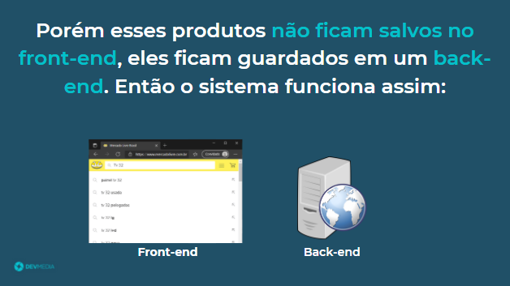
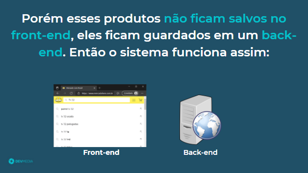

Além do front-end, alguns sites apresentam uma camada extra chamada de back-end como pode ser visto no flow abaixo:
O usuário não tem acesso ao back-end


 



Back-end é a camada responsável por manipular e armazenar as informações do site

Back-end é a camada responsável por manipular e armazenar as informações do site.
Nele o usuário não tem acesso, quem consegue interagir com o back-end é a camada front-end